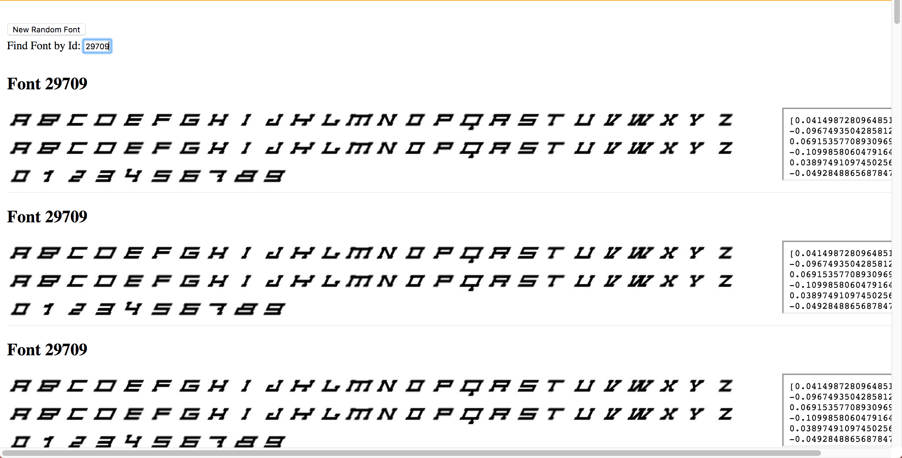
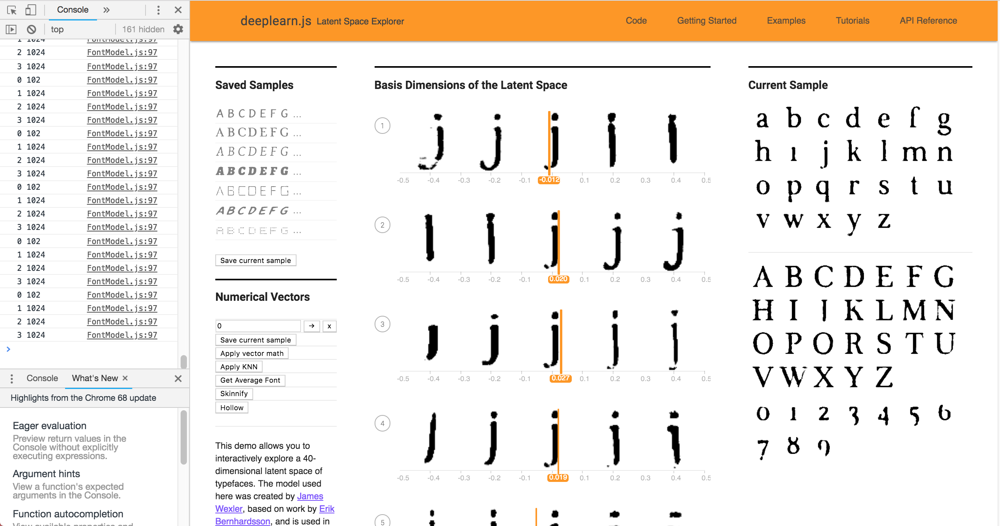
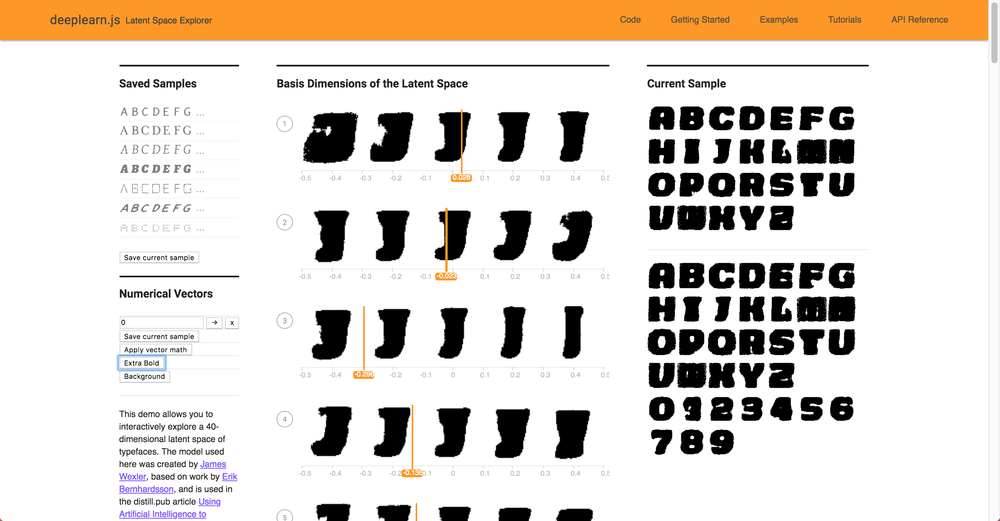

6.S198 Assignment 4
Jenny Xue jennyxue@mit.edu
1.1) Visualizing datasets using the embedding projector
-
Do the different digits separate into distinct clouds? Are there images that are in the wrong cloud, and can you make sense of why they are wrong? Are there images that are outliers from the rest of the data?
Are there digits that seem more separate from the others, and are there pairs of digits that are more easily confused?
-
The different digits separate into distinct clouds. As you can see from the examples that I have attached, the distinction is clearly seen in the different colored clouds, for example 6 and 0. However, you
can also spot many 5's separating from the 5 cloud and blending in even to the 0 cloud. The reason that they are in the wrong cloud could be because of many reasons. First, I only ran the simulation for about 200 iterations, which means
that it's not trained enough. Secondn, the way these 5's are written connects the bottom circle, which makes them resemble 0s.
-
I highlighted some of the outliers below, which are the numbers with the greatest variance.
-
The numbers that border each other are more easily confused, but the numbers that are on opposite ends of each other show more separation. For exmample,
0 and 1 are very separated while the highlighted 0 & 2, 0 & 6, and 4 & 9 are more easily confused.
1.3) Word geometry
-
The words will now be displayed from left to right according to their distance along the line from “violin” to “drum”. (You'll notice that you're now unable to rotate the 3D space due to the left/right settings.) Can you give any interpretations to what is shown?
-
With violin on the left side and drum on the right side, the other words that are shown are the closest neighbors (words most frequently appeared with) of both violin and drum and it shows the distance between them. As we can see, piano is more
frequently appeared with violin.
-
Experiment with various words to see if you can identify any insights about the data set. For example, try “politics” along the dimension from “bad” to “good”, or
“engineer” along the spectrum from “man” to “woman”. Write up some notes on your observations, perhaps supplemented with a few pictures. Do you get different or better
results if you use Word2Vec All instead of 10K? Did you find any interesting examples that speak to how words are used news articles? Write up what you experimented with
and what conclusions you drew.
-
The two images show "engineer" along the dimension from "man" to "woman" and also the neighbor "soldier." The left image is of Word2Vec 10K and the right image is of Word2Vec All. Overall there are no major differences between 10K and All, the words are mostly still on the same "side"
of the spectrum (right or left). In 10K, soldier is more frequently associated with woman while in All, solider is more towards the middle (associated frequently with both). This is because there are more words which means there could be additional relationships that are formed between words. Both wordsets
are able to depict the innate bias in "engineer", that society associates engineers with men more often than women. There's not really "better" results.
-
The left image show "democrat" along the dimension from "bad" to "good", while the right image show "republican" along the dimension from "bad" to "good". Both are from the Word2VecAll dataset. As you can see, democrat is more frequently associated with "good" while republican is more
frequently associated with "bad".
-
The left image show "democrat" along the dimension from "bad" to "good", while the right image show "republican" along the dimension from "bad" to "good". Both are from the Word2Vec 10K dataset. As you can see, both are more associated with "bad", but democrat is still slightly more frequently associated with "good"
while republican is more frequently associated with "bad".
-
An initial conclusion that I can draw is non-polarizing words such as "piano" will shift less as the dataset size grows but polarizing words such as "democrat" and "republican" will shift more as the dataset size grows. However, further testing needs to be done to support this hypothesis.
1.4) Finding word analogies with vector algebra
-
Spend a few minutes experimenting with the demo on https://rare-technologies.com/word2vec-tutorial/ (under “Bonus App”) which uses Word2Vec vector algebra to solve analogies. Make a note of any interesting examples you find.
-
Examples where app get the answer correct:
-
Examples where app understands there is a link but doesn't give the correct answer:
-
Examples where app misses answer entirely:
1.5) Exploring fonts with the Embedding Projector
-
View the fonts with PCA embedding. Do you see any clumps/areas with obvious characteristics?
-
From the image below, we can see that the fonts are more heavily clusters on the bottom left.
PCA Font ID: 4254 (lines), 2239 (abstract), 6487 (not english)
-
Change to the embedding to T-SNE. Record how many iterations you let T-SNE run for for and whether or not you were able to get interesting groupings. Again, record Font IDs for interesting fonts/groupings.
-
Iterations: 527. From the image below, we can see that there is cluster at the top, and a cluster at the bottom.
Font ID: 3992 (abstract, top), 191 (triagle, bottom)
-
Find a font you like, get its ID, and type that into the search bar at the right-hand side of the screen. Use the "neighbors" slider to isolate a few dozen points and record the Font IDs of the 10 nearest neighbors that make sense. Repeat this for 3 or 4 fonts. If you find a font that doesn't have nearest neighbors that look similar, note that down as well.
2.3) Creating New Fonts
-
Edit FontModel.js so another character besides "r" is being displayed as the sample character for the 40 attributes. Edit Alphabet.vue so that all of the uppercase,
lowercase, and numerical sample font characters are displayed in the right side of the screen instead of just the lowercase characters. Take a screenshot for your writeup.
-
This is an app that lets you input a font Id and shows you the font. Document your work in your writeup and show a few examples. Can you find examples of nearest neighbor fonts that don't make sense?
-
This example is relatively accurate when considering the overall thickness and slightly slanted strokes. However, the fonts in 9493 seem more "brush stroke" with letters a-i more feint.
-
This example doesn't make much sense, but it is expected since the new font doesn't really look like the alphabet at all.

-
This example is relatively accurate when considering the overall skinniess of the fonts. However, the neighbor font with the curly ends is very different.
-
What is the “average” of a set of fonts? (Hint: What does that mean in terms of the 40 dimensions)?
Write some code to Find the nearest font neighbor to the average font.
-
The average font is 23607.
-
What does adding this vector to a font do? Does it perform bolding well at thickening the original font?
Are there other characteristics that seem to also carry over? Try this with another characteristic. It may be helpful to use the characteristics you gathered previously.
-
Adding this vector to a font thickens the font (bold). It bolds the fonts relatively well. The slantedness also carries over, but the dots don't seem to.
-
Find 10 fonts for a specific quality (i.e. bolding, dotting, fancy, serif...etc) and average them out to find a characteristic vector (for example, “bolding vector”).
Try applying that vector to another font. Again, you can do this by manual computation and then modifying the added vector in the "Apply Vector Math" button, or you can make new buttons.
Does it work better or worse than the previous one-sample method? Try this with at least 2 characteristics.
-
Skinnify: Adding this vector to a font creates a skinnier version of the font. It doess this relatively well. The slantedness and dots both carry over.
-
Hollow: Adding this vector to a font should create a hollow version of the font. It doess this very poorly and achieved almost the same effect as skinnify.

-
Find 10 fonts the exhibit for a specific characteristic and 10 fonts for the opposite of that characteristic (i.e. bold vs. corresponding non-bold). Subtract
the vectors for each pair and take the average difference. How does this work as a vector for the characteristic (e.g., as a "bolding vector")?
Does this work better or worse than the method above to obtain your desired characteristic? Try this with at least 2 characteristics.
-
Extra bold (bold - non bold): Adding this vector to a font creates a extra bold version of the font. It doess this relatively well. The slantedness carries over but the dots are too big to be seen.


-
Background (background - nonbackground): Adding this vector to a font should create a background version of the font. Although it carries over characteristics such as dots and boldness, some letters are barely
recognizable.
-
Can you figure out how to create a vector that makes uppercase fonts lowercase? (Hint: You can try finding fonts that only have uppercase/lowercase characters and finding analogous vectors, or you can try playing with the 40 attribute sliders directly.
-
I found 10 very different looking (italics, bold, bubbly, etc) lower case fonts, averaged them then subtracted twice that from the selected font. This worked less well on skinnier fonts than bold fonts.
-
Can you create a vector based on your personal font tastes (i.e. a personal-likeable vector)? Please also make note of any interesting vector directions you find.
-
My favorite style is the slanted all capitalized font, and it did a pretty good job of replicating that style.
-
Add links to your code files on your website.
Alphabet`
Vector Chooser
Font Model